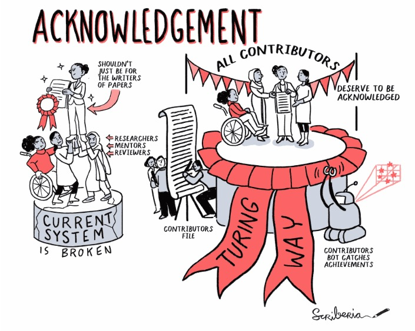

Providing Equitable Opportunities and Credit for Contributors to Results
Introduction
If I have seen further it is by standing on the shoulders of Giants.
Turnbull, H. W. ed., 1959. The Correspondence of Isaac Newton: 1661–1675, Volume 1, London, UK: Published for the Royal Society at the University Press. p. 416
If you are a researcher, regardless of your career stage, chances are you are not working alone. And even if you are working alone on any given project, your work likely builds on the work of others. And just like that, others after you will build on your work, advancing our understanding of the world and beyond.
In the previous lessons of this module, we defined open results and talked about ways you can frame your research so that all your outputs are open. We also spent some time explaining why sharing your results openly avoids “reinventing the wheel” by reusing existing work, saves time and increases efficiency, and facilitates collaboration and onboarding of new members.
In this lesson, we will talk about authorship and contributorship, and dive deeper into why open results matter, specifically talking about how openly communicating your results can open up doors to unforeseen opportunities for collaborations. We will also provide you with guidelines on how to ensure contributions to your current or future work happen equitably, maximizing the chances of fair and successful collaborations. Finally, we will briefly go over how you can contribute to others’ open results in a way that helps your colleagues improve their work and work towards shared research goals.
How do we define contributors to each research object and determine their suitable form of credit?
How to create contributor guidelines that ensure equity, access, inclusion, diversity

Figure 2: The process of acknowledging contributors in The Turing Way. The Turing Way project illustration by Scriberia. Used under a CC-BY 4.0 licence. DOI: 10.5281/zenodo.3332807.
Contributor Guidelines
In addition to providing guidelines on how to assign authorship, you also want to have a system in place to fairly recognize the contributions of non-authoring contributors. Additionally, you may want to consider guiding contributions to your results after they are made open. Let’s take a look at how you can go about this.
Inviting others to provide feedback and contribute
Often in academia, external feedback is not sought out until we submit our manuscripts for publication to a journal or a conference in which case 2-3 reviewers, presumably experts in the field, are recruited by an editor to anonymously review your work. The process of peer review is a much-dreaded one as the expectation tends to be the one that feedback will set us back, keeping us from publishing our work, or attending a conference.
But it does not have to be that way. Together, we can build a future in which feedback from outside of those who are directly involved in the project is sought out sooner and is welcomed with a much more positive attitude. Of course, what you don’t want is to get showered with non-constructive opinions or personal attacks, which is why it is important that you set the rules for contributions.
Contributor guidelines are documents that are often used in open source projects to guide potential project contributors in providing constructive feedback. They contain information about the project itself, links to various parts of the project, and, most importantly, a detailed description of how to report errors (often called “bugs” in code jargon), suggest changes, and even request integration of large parts of code improving or adding features.
In the context of scientific research, the practice of having a document that accompanies results and explicitly states how and what type of feedback should be provided is not common. However, when you begin to make more and more of your results open at different stages of your research cycle, you may want to invite feedback to aspects of your work that you think need it the most. You also may benefit from guiding the way that feedback is received so that a) other people feel like it is okay to contribute, and b) your corresponding author’s email doesn’t get filled with non-constructive, not actionable and unclear advice.
Let’s say, for example, that you and your team are drafting a research manuscript and are getting pretty close to having all the information in place for it to be shared as a preprint. This does not necessarily mean that it is in a stage that you would consider “final”—if such a stage even exists!—but it contains enough information so that others who are in the same or similar fields of research can understand what the work is about and correctly interpret your results. This may be a good time to solicit feedback from colleagues or the broader community, and maybe even guide it towards aspects of your work that you think would most benefit from review or contribution.
Maybe you want to drive the attention of your contributors to the Methods section where a statistical analysis that is uncommonly used for the kind of experiment you conducted is described. Or maybe you would like some feedback from people with data visualization expertise so that you can best present your data.
Where should you put your contributor guidelines? You may have one place on your website where you can write general contributor guidelines to any open result you and your team share and link to the guidelines in your open result themselves. The contributor guidelines document can be part of the authorship and contributorship document you prepared following the tips in the previous section. You may even want to publish a version of the record that has a permanent identifier so that the links would never “break”. Repositories such as GitLab/Github and Zenodo would allow you to post versions of the original documents that would be linked to one another.
General contributor guidelines that also include the authorship guidelines we talked about in the previous section may look something like the sample template provided in ‘Assessment 1’ at the end of this lesson
Additional resources for reference
For additional tips on how to acknowledge contributors, check out Acknowledging Contributors The Turing Way.
If working with online repositories such as GitHub, an app like ‘all-contributors’ bot is a great way to automate capturing all kinds of contributions, from fixing bugs to organizing events to improving accessibility in the project.
More systematic work is being undertaken by hidden REF who constructed a broad set of categories (https://hidden-ref.org/categories) that can be used for celebrating everyone who contributes to the research.
There are several research infrastructure roles like community managers, data stewards, product managers, ethicists and science communicators, who are also being recognised as valued members in research projects with an intention to provide leadership paths for technical and subject matter experts, even when their contributions can’t be assessed in tangible or traditional outputs [reference].
The Declaration on Research Assessment (DORA) (https://sfdora.org/) is also a good resource to understand what researchers, institutions, funders and publishers can do to improve the ways in which researchers and the outputs of scholarly research are evaluated.
How to ensure your open results are properly attributed and cited by others
A citation is a reference to a source, which can include any of the research objects described previously in this module, used in your underlying research work. Citation (and other forms of acknowledgement) have been the primary means by which researchers and scholars receive credit for their work. Put differently, citations have largely been the “reputation currency” of science. In this section, we will discuss various ways that you can ensure that your work is citable and that when it is cited, you are properly credited.
Persistent Identifiers (PIDs)
Persistent identifiers or PIDs are an invaluable part of the citation process. They are long-lasting references to digital resources which allow you to reliably find and verify resources leveraging underlying metadata which is associated with the identifiers. More importantly, by using PIDs, you can take advantage of scholarly systems that can help you be more productive and efficient in sharing research outputs while further supporting the acknowledgement of your research. Also, by using PIDs you will be making your research findable, accessible, interoperable, and reusable or FAIR, essentially machine-readable, and responding to International and national efforts to open up science. The best way to understand the value of PIDs though is to look at two examples, ORCID iDs and DOIs (Digital Object Identifiers).
ORCIDs
ORCID iDs or ORCIDs are long-lasting unique identifiers for researchers. ORCID is an acronym for ‘Open Researcher and Contributor ID’. A freely available service for researchers, ORCID is used globally. It is used to authenticate via a wide array of research systems but it is also increasingly recommended and even required by manuscript systems for preprints and journals (introduction video by ORCID).
ORCIDs address the challenges around disambiguating author names and distinguishing their works. So for instance, authors that share a common name do not have to worry about their research being mixed up and not associated with themselves. They are also useful towards supporting life changes where your name can change but where your work can still be associated via your ORCID. Of course, they also keep your data intact even if you change your legal name at any time.
While you can use ORCID for your profile, it also facilitates interoperability where entering your information once can save time on entering it into other research information systems. ORCID supports an array of research activities you are associated with from your roles and grants to peer reviews you have done and data you have created. By entering your ORCID and/or authenticating with other systems, they can reuse this information so you do not have to enter it again, but you can also have greater control over your record as well.
One way to demonstrate the benefit of interoperability via ORCID is by enabling auto-updating with Crossref (digital identifier service for primarily preprints and journals) and DataCite (Digital identifier service for data, software and other research objects). ORCID provides instructions on how to enable auto-updates with these services so you do not have to re-enter information from works and resources you have authored [reference]. By enabling this feature, you will get notifications when new works are connected with your profile and ready to be made public.
A good practice is to consistently use your ORCID and to provide ORCIDs upfront in research projects, for instance, creating a contributors resource (see this example by The Turing Way) where this information can be easily accessed when resources are created over the life of a project (versus always having to dig up this information in various places).
Digital Object Identifiers (DOIs)
Digital Object Identifiers or DOIs are unique, persistent identifiers provided for objects. The services mentioned above, Crossref and DataCite, both use DOIs, where Crossref primarily is for works such as journal articles, preprints, and book chapters, to name a few, while DataCite has been mainly used for datasets, software, and presentations. The two overlap in the types of research objects they cover, but DataCite is used more often by repositories to provide DOIs and Crossref is more widely used by publishers. Through these services, publishers and repositories are committed at least to the persistence of the overarching metadata about these objects and that links to them do not break or rot. URLs or links used on the web are known to break, move, or not be available while DOIs are intended to ensure that information about the objects that they are linked to is not lost.
While one of the advantages of using DOIs is maintaining persistent links to research objects that might normally be lost on project websites, another advantage is that you can use the underlying metadata associated with DOIs to help with certain tasks such as citing and reporting your activities. One such service that demonstrates this value is CrossCite. Enter a DOI, choose a citation style and then format. What normally takes time re-entering information and formatting took very little time. More and more, scholarly services are leveraging DOIs to automate workflows and help researchers reduce the amount of time it takes to do certain tasks like the one described above, but of course, a system like this is dependent on quality metadata and researchers using it.
Another advantage of using DOIs is that you can publish more aspects of your research, beyond just a paper, from data and software to presentations, and if done from the start, can be used to support the transparency and replicability of your research. Not only does this practice help towards recording how your research progressed, it can be used to respond to open science recommendations and requirements, but it is also just good scientific practice.
How can you use DOIs? One way to start and test how you can use DOIs is via a sandbox service such as the one Zenodo provides. Anything you do in the Zenodo sandbox is not permanent and will be removed periodically. Once you are comfortable, you can move to use the actual public Zenodo service or some of the other repositories listed at re3data.
All the PIDs
There are a number of persistent identifiers beyond the two examples above. A brief list can be found via Project Thor but absent are other identifiers such as RAiDs (Research Activity Identifiers), RRID - Research Resource Identification, ROR ids (Research Organization Registry) and IGSNs (International Generic Sample Number Organization). Determining what identifiers to use can be challenging but thankfully national PID strategies are highlighting identifiers to focus on, at least to start. ORCIDs for people. RORs for organisations. Crossref/DataCite DOIs for research works/objects. RAiDs for research projects. Grant ID (Crossref) for research funding.
Limitations
Not all the systems are ready for identifiers. For instance, identifiers can be lost in research publications and it is best to provide context/annotate them. In the case of journal articles, you can include a bracketed description such as [Data set] or [Software] with the citation and DOI in your references section along with describing the identifiers used in data/software availability or sharing sections. Also, it is important to maintain consistency when using identifiers and citations so that it is clear what other researchers should cite and credit. For example, use the same citation/DOI on GitHub as compared to your website and in your publications.
Self-assessment #1: Develop a contributor guideline for a future project you are considering
Assessment #2: A case study
- Identify the contributors to each research object, at each stage in the research process.
- Were these contributors credited? If so, was their contribution credited fairly with best practices from open science? If not, what could have been done differently?
- Identify contributors that could have added value to different stages of your project and attribute their work fairly
Assessment #3: Give citations for the Research Objects reused in your work
Generate a citation from a DOI associated with a dataset that you preserved in a repository, like, Zenodo, using the crosscite tool. Don’t have a dataset DOI, note this for your future research. In the meantime, find a DOI for another one of your research objects, like a paper, and generate a citation using CrossCite.
References
- Fleming, N. (2021). The authorship rows that sour scientific collaborations. In Nature (Vol. 594, Issue 7863, pp. 459–462). Springer Science and Business Media LLC. https://doi.org/10.1038/d41586-021-01574-y
- D’Ignazio, C., & Klein, L. (2020). 7. Show Your Work. In Data Feminism. Retrieved from https://data-feminism.mitpress.mit.edu/pub/0vgzaln4
- “PREreview. Catalyzing change in peer review through equity, openness, and collaboration” https://prereview.org/.
- “Auto-updates: time-saving and trust-building.” ORCID, https://support.orcid.org/hc/en-us/articles/360006896394-Auto-updates-time-saving-and-trust-building
- The Turing Way Chapters: Project Ownership; Tips for Getting Authorship Right and Acknowledging Contributors; Research Infrastructure Roles; Creating project repositories. https://the-turing-way.netlify.app/welcome.html, The Turing Way Community, Zenodo, 27 July 2022, doi:10.5281/zenodo.6909298.
- “ICMJE | Recommendations | Defining the Role of Authors and Contributors.”, www.icmje.org/recommendations/browse/roles-and-responsibilities/defining-the-role-of-authors-and-contributors.html.
- Colbert, Melissa C., Robert B. Nussenblatt, and Michael M. Gottesman. “Integrity in Research: Principles for the Conduct of Research.” Principles and Practice of Clinical Research. Academic Press, 2018. 33-46.